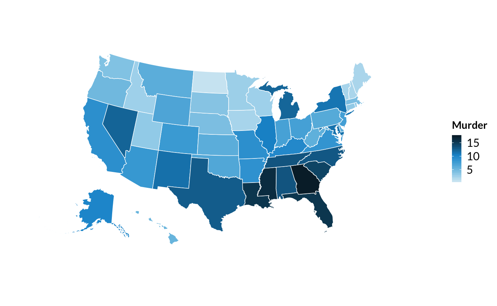

library(tidyverse)
library(urbnmapr)
source("https://raw.githubusercontent.com/UrbanInstitute/urban_R_theme/urban_R_theme_revamp/urban_theme.R")## Warning: New theme missing the following elements: plot.tag,
## plot.tag.positionUSArrests_merged <- USArrests %>%
rownames_to_column("state_name") %>%
select(state_name, Murder) %>%
left_join(states, by = "state_name")The world is approximately a 3-dimensional sphere. Maps are two-dimensional. Projections are transformations from points on the sphere to points on a map. Different situations require different projections. The Albers Equal-Area Conic Projection is a common choice for choropleths of the entire United States.
Add coord_map(projection = "albers", lat0 = 39, lat1 = 45) to your ggplot2 call to use this projection.
Plot the merged data set from above using library(ggplot2). long, lat, and group
USArrests_merged %>%
ggplot(aes(long, lat, group = group, fill = Murder)) +
geom_polygon(color = "#ffffff", size = 0.25) +
coord_map(projection = "albers", lat0 = 39, lat1 = 45) +
scale_fill_gradientn() +
urban_map +
theme(legend.position = "right",
legend.direction = "vertical",
legend.title = element_text(face = "bold", size = 11))